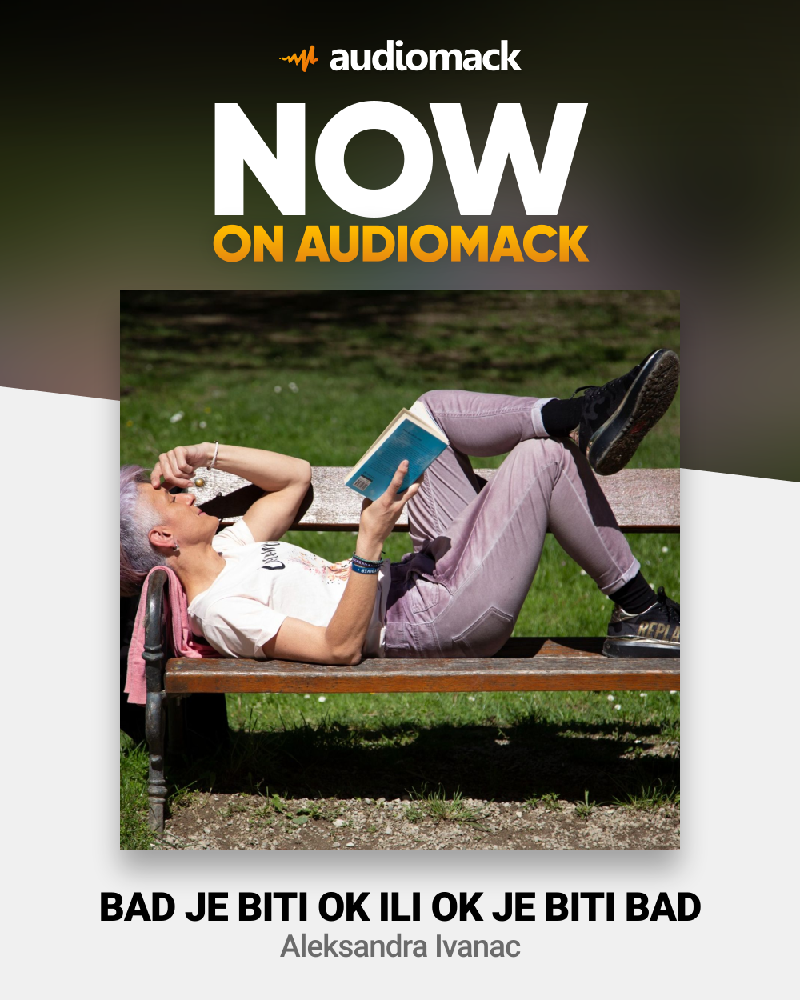

The skills I acquired during my work and continuous education are the basic tools I use.

- communication skills
- mediation skills
- creative skills
- design skills
- organization skills
- writing projects
- team work
- presentation skills
- writing skills (blogs, posts)